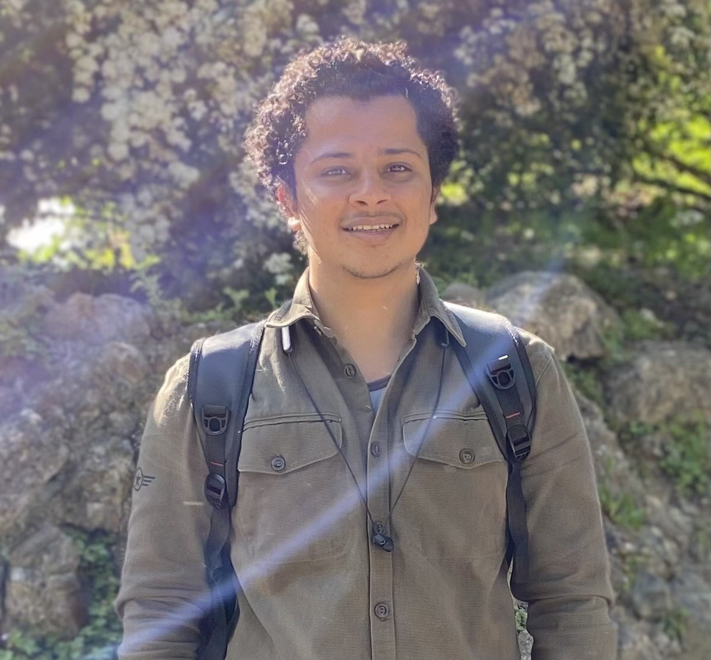

Automotive Engineer | Vehicle Dynamics, Controls & ADAS | Mechanical Design
Egyptian automotive engineer born in Giza, Egypt (01/07/1999), currently based in Torino, Italy. Open to relocation and international opportunities.
About
I am an Automotive Engineer with a strong focus on Vehicle Dynamics, Controls, ADAS, and Mechanical Design.
I have hands-on experience in mechanical design, CAD modeling, and simulation tools such as SolidWorks and MATLAB, applied to practical engineering projects.
I am passionate about innovative automotive technologies, including autonomous and connected vehicles, and I am eager to contribute my skills to cutting-edge projects that advance mobility and sustainability.
Education
- Politecnico di Torino
Master's Degree in Automotive Engineering
- Politecnico di Torino
Bachelor's Degree in Automotive Engineering
Thesis: Gearbox with Two Stages in Parallel Shafts and Cylindrical Spur Gears
- Istituto Salesiano Don Bosco
Diploma in Mechatronics, Robotics and Automation Engineering
Skills
Engineering Skills
- Vehicle Dynamics
- Control Systems
- ADAS Technologies
- Mechanical Design
Technical Skills
- SolidWorks, AutoCAD, MasterCAM, ZW3D, NX Siemens
- MATLAB & Simulink
- Python
- CAD/CAM Programming
- CIMCO Simulation, NC2Check
- Excel & Microsoft Office Suite
Personal / Soft Skills
- Organizational Skills – ability to prioritize and manage tasks independently
- Interpersonal Skills – work effectively in multicultural environments
- Communication – clear and professional interaction with colleagues and clients
Professional Experience
-
CAD/CAM Programmer – RS Automazione, Torino, Italy (Nov 2023 – May 2025)
- Programming and simulation of CNC machines using various CAM software.
- Construction of 3D models of machine tools for simulation.
- Customer assistance and support.
- Temporary Work
Projects
- Gearbox Mechanical Design
Mechanical design and CAD modeling of gearbox components using SolidWorks, including assembly development and mechanical analysis of transmission components.
- Robotic Arm Design
Mechanical structure design and motion analysis of a robotic arm system, including kinematic study and CAD modeling of mechanical components.
- Adaptive Cruise Control (ACC)
Development and simulation of an Adaptive Cruise Control system using MATLAB and Simulink. The controller regulates vehicle speed and maintains a safe distance from the preceding vehicle.
- Lane Keeping Assist System
Design and simulation of a lane keeping control system capable of maintaining the vehicle within lane boundaries using vehicle dynamics modeling and feedback control algorithms.
- Vehicle Stability Control (VSC)
Modeling and simulation of a stability control system to improve vehicle handling and prevent loss of control by regulating yaw dynamics during critical driving conditions.
Languages
- Arabic – Mother tongue
- English – B2 (Listening, Reading, Speaking, Writing)
- Italian – B2 (Listening, Reading, Speaking, Writing)
Personal Skills
- Organizational skills – ability to prioritize and manage tasks independently.
- Interpersonal skills – ability to work in multicultural environments and effective teamwork.
- Communication – clear and professional interaction with colleagues and clients.